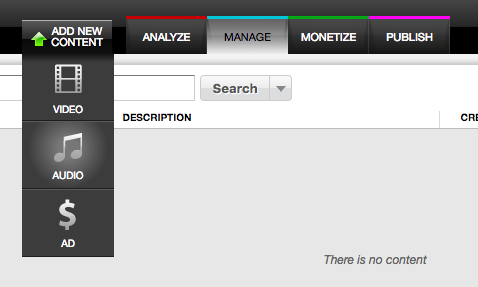
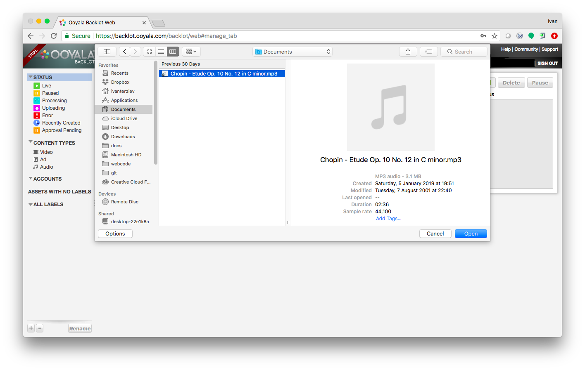
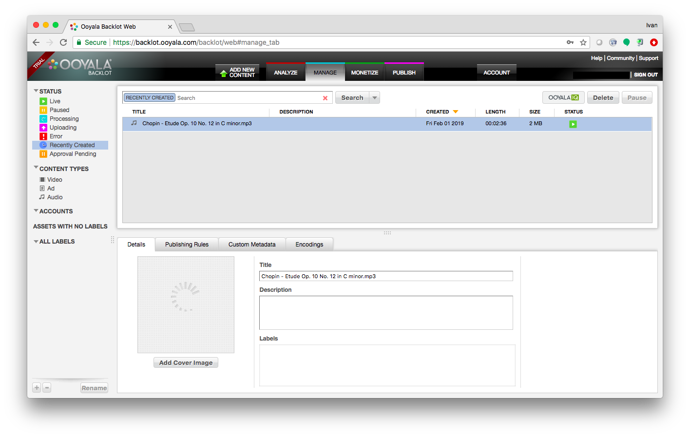
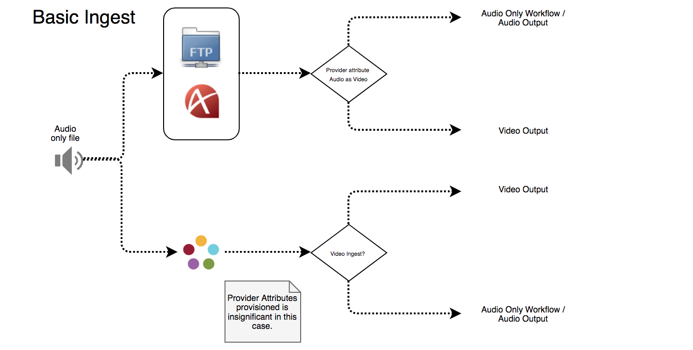
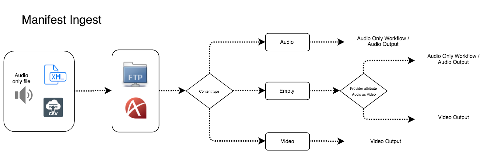

This section describes the supported content ingestion and transcoding options for Audio-Only Player.
Ingestion of content
The first step when setting up an Audio-Only Player is to import your content for ingestion in Backlot or using the Ooyala Ingestion Service (OIS).
Ingestion of content can be done using one of the following three methods.
Basic ingestion via Ooyala Backlot.
This method allows you to choose the type of content you are uploading - audio, video, or both. In Backlot, you add audio content files in the same way as you would add video assets (see for more infromation). When you add an audio content file in Backlot (import an existing audio-only file from the ADD NEW CONTENT tab - relevant if you are ingesting an audio file rather than adding audio content as a remote asset), it is added to a list of assets and classified as audio-only content.
Steps:


It will be added in the list of assets and specified as an audio asset type. This will output an HLS stream that has only the AAC audio included in the stream packaging (single bitrate). This source file will be processed by a new default audio-only processing profile.

Basic ingestion via FTP or Aspera, using the Ooyala Ingestion Service (OIS).
When using this method, the Provider attribute categorizes if the content is Audio-Only or Video output, and then treats it accordingly (unlike with Backlot import, where the user selects from the UI the type of content (audio or video) that will be uploaded, as explained above).
The following diagram shows how basic ingestion works:

Manifest ingestion via FTP or Aspera, using the Ooyala Ingestion Service (OIS).
This ingestion method enables you to upload the media asset via FTP or Aspera using a manifest file that categorizes the content as audio or video output. If the manifest is empty, the provider attribute classifies the asset depending on the source file type.
The following diagram shows the ingestion workflow with a XML or CSV manifest file:

Transcoding
Transcoding is a process that converts a video file from one format to another so that the video can be played across various platforms and devices. The Ooyala Transcoding Service (OTS) takes video and audio assets that a customer has loaded into Backlot (as described above and in About Ingesting Content) and performs whatever processing is required to prepare them for optimized playback.
With the introduction of Audio-Only Player, the following transcoding outputs are now available: